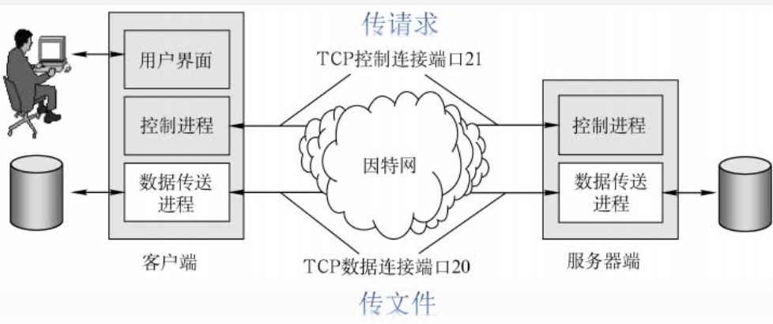

2022.03.16
文件传输协议(File Transfer Protocol, FTP)是因特网上使用得最广泛的文件传输协议。FTP提供交互式的访问，允许客户指明文件的类型与格式，并允许文件具有存取权限。它屏蔽了各计算机系统的细节，因而适合于在异构网络中的任意计算机之间传送文件。
FTP提供以下功能：
①提供不同种类主机系统（硬、软件体系等都可以不同）之间的文件传输能力。
②以用户权限管理的方式提供用户对远程FTP服务器上的文件管理能力。
③以匿名FTP的方式提供公用文件共享的能力。
FTP采用客户服务器的工作方式，它使用TCP可靠的传输服务。一个FTP服务器进程可同时为多个客户进程提供服务。FTP的服务器进程由两大部分组成：一个主进程，负责接收新的请求：另外有若干从属进程，负责处理单个请求。其工作步骤如下：
① 打开熟知端口21（控制端口），使客户进程能够连接上。
② 等待客户进程发连接请求。
③ 启动从属进程来处理客户进程发来的请求。主进程与从属进程并发执行，从属进程对客户进程的请求处理完毕后即终止。
④ 回到等待状态，继续接收其他客户进程的请求。
FTP服务器必须在整个会话期间保留用户的状态信息。特别是服务器必须把指定的用户账户与控制连接联系起来，服务器必须追踪用户在远程目录树上的当前位置。
FTP在工作时使用两个并行的TCP连接（见图6.7）：一个是控制连接（端口号21），一个是数据连接(端口号20)。使用两个不同的端口号可使协议更加简单和更容易实现。

服务器监听21号端口，等待客户连接，建立在这个端口上的连接称为控制连接，控制连接用来传输控制信息（如连接请求、传送请求等），并且控制信息都以7位ASCⅡ格式传送。FTP客户发出的传送请求，通过控制连接发送给服务器端的控制进程，但控制连接并不用来传送文件。
在传输文件时还可以使用控制连接（如客户在传输中途发一个中止传输的命令），因此控制连接在整个会话期间一直保持打开状态。
服务器端的控制进程在接收到FTP客户发来的文件传输请求后，就创建“数据传送进程”和“数据连接”。数据连接用来连接客户端和服务器端的数据传送进程，数据传送进程实际完成文件的传送，在传送完毕后关闭“数据传送连接”并结束运行。
数据连接有两种传输模式：主动模式PORT和被动模式PASV。
PORT模式的工作原理：客户端连接到服务器的21端口，登录成功后要读取数据时，客户端随机开放一个端口，并发送命令告知服务器，服务器收到PORT命令和端口号后，通过20端口和客户端开放的端口连接，发送数据。
PASV模式的不同点是，客户端要读取数据时，发送PASV命令到服务器，服务器在本地随机开放一个端口，并告知客户端，客户端再连接到服务器开放的端口进行数据传输。
【小结：主动模式是客户端建一个端口，告诉服务器；被动模式是服务器建一个端口，告诉客户端】
可见，是用PORT模式还是PASV模式，选择权在客户端。简单概括为，主动模式传送数据是“服务器”连接到“客户端”的端口；被动模式传送数据是“客户端”连接到“服务器”的端口。因为FTP使用了一个分离的控制连接，所以也称FTP的控制信息是带外(Out-of-band)传送的。使用FTP时，若要修改服务器上的文件，则需要先将此文件传送到本地主机，然后再将修改后的文件副本传送到原服务器，来回传送耗费很多时间。网络文件系统(NFS)采用另一种思路，它允许进程打开一个远程文件，并能在该文件的某个特定位置开始读写数据。这样，NFS可使用户复制一个大文件中的一个很小的片段，而不需要复制整个大文件。
匿名FTP访问通常使用()作为用户名。
A.guest
B.E-mail地址
C.anonymous
D.主机id
【答案】：C